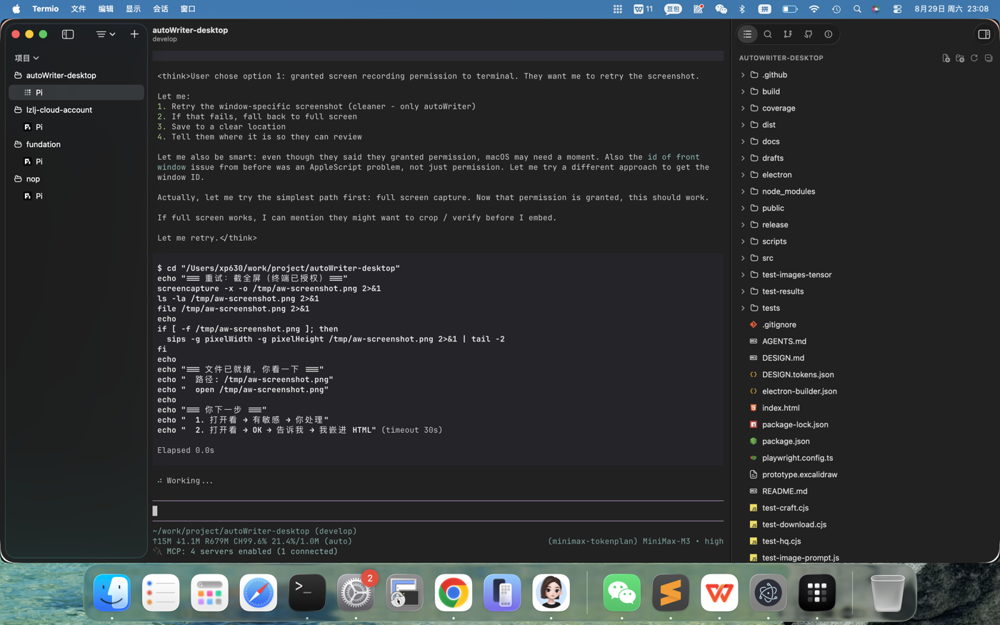

找了一篇硬核文章问 AI 能不能写，AI 说"它不背这个锅"
三个月前我做了一个 AI 写作工具。4 个版本、12 个按钮之后，我自己都不会用了。
三个月前，我想靠公众号挣杯奶茶钱。
每次发文要花两小时：找主题、理大纲、写正文、找图、排版、复制粘贴到后台。我想着，要是能让 AI 替我做完这些流程，我躺着就能把钱挣了。
其实想做这事想了挺久，但一直没动。直到有天看到媳妇的公众号收入了第一笔一分钱——一篇文章带来的。一分钱。一分也是"第一桶金"。那天晚上我就把电脑打开了。
然后我没刹住车。
"能不能分析参考文"——我加了策略层，5 种互斥角度。
"能不能防止 AI 编"——我加了证据账，没备的强制留占位。
"能不能让我先想清楚写什么"——我加了三问必答。
"能不能让我发之前自检"——我加了成稿体检四检。
4 个版本下来，系统里 12 个按钮，流程走了 9 步。
老实说，我从来没觉得任何一版"完美"过。每发完一个版本，我就看到一个"还不够"的地方——再加一层闸门、再让 AI 多问自己几个问题、再加个体检。我机械地追求完美，以为它是一个加得够多就能到的地方。
直到我自己想发一篇。
打开系统，看着满屏按钮——模式切换、抓取、粘贴、分析、生成策略、采纳、跳过策略……我自己都不知道下一步点什么。

我是这个工具的作者。
那之后我做了一件事：找了一篇深度硬核的技术长文，让 AI 帮我分析、参考、然后仿写一篇。
我问它："你能写出这种文章吗？"
它回我三个字——"系统不背这个锅"。
那一刻我才意识到：工具一直很清楚它能做什么、不能做什么。是我在假装它能替我做"想说什么"这件事。
我不再问"工具能加什么功能"。
我开始问自己另一句话——"我今天想说什么？"
如果我说不出，那今天就不写。
工具能放大我已经有的，给不了我还没有的。
内核还是人。
你最近一次想写但写不出是什么时候？是被工具卡住了，还是本来就没想好要说什么？
留言说说你的那一秒。
如果你也被"功能太多"困住，转发给那个朋友看看——他可能正在加第 13 个按钮。